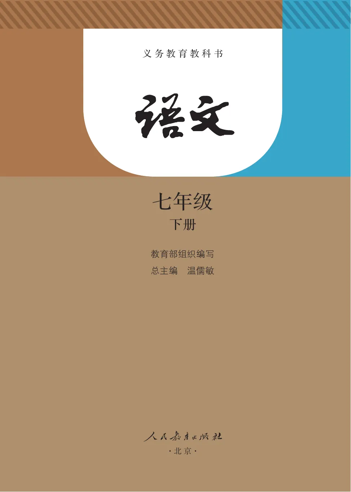
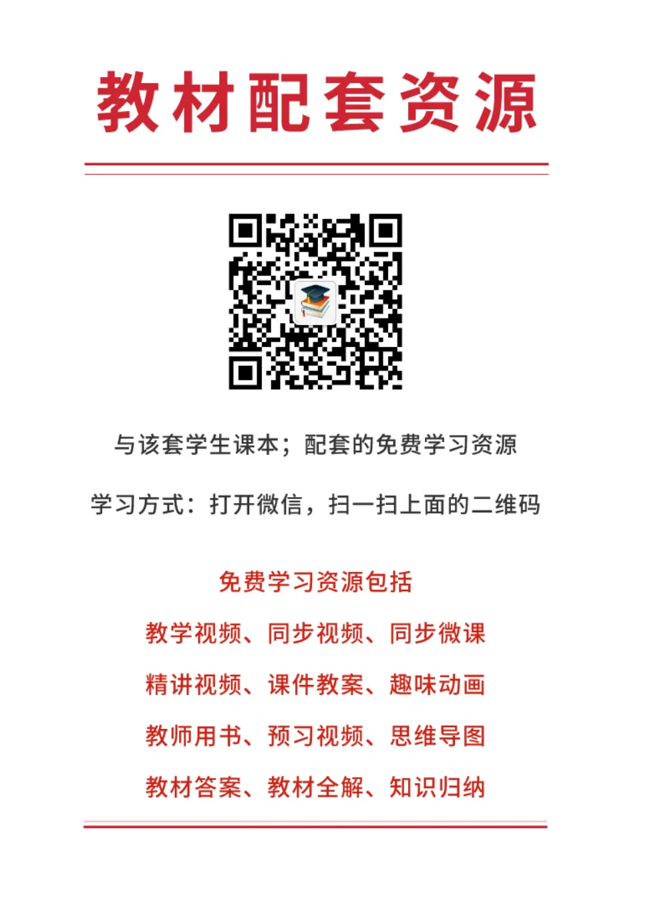
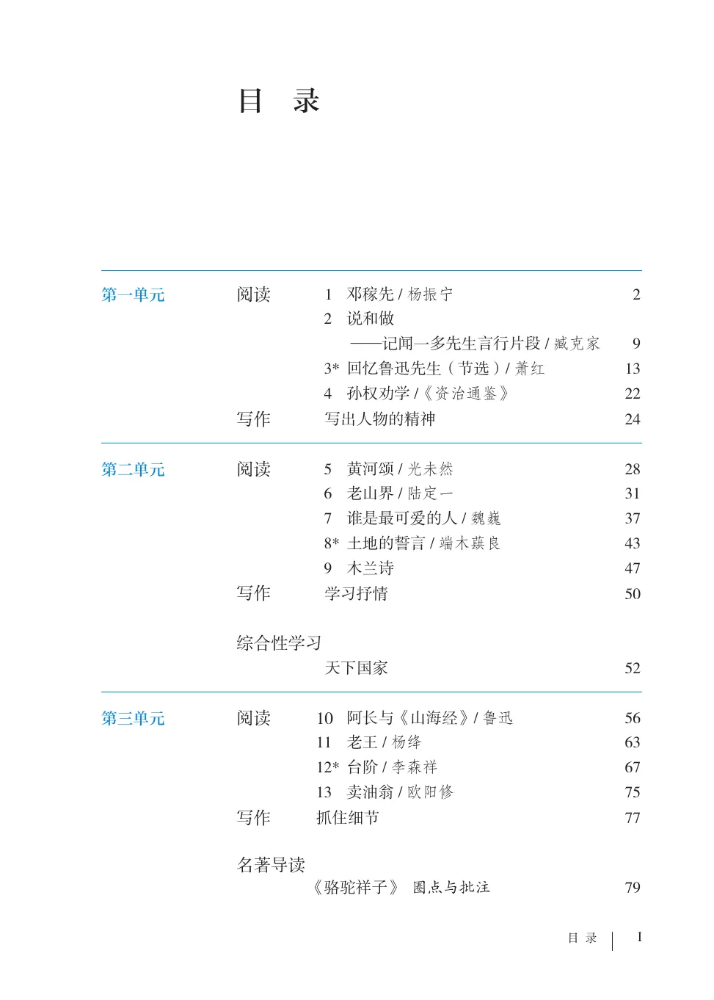
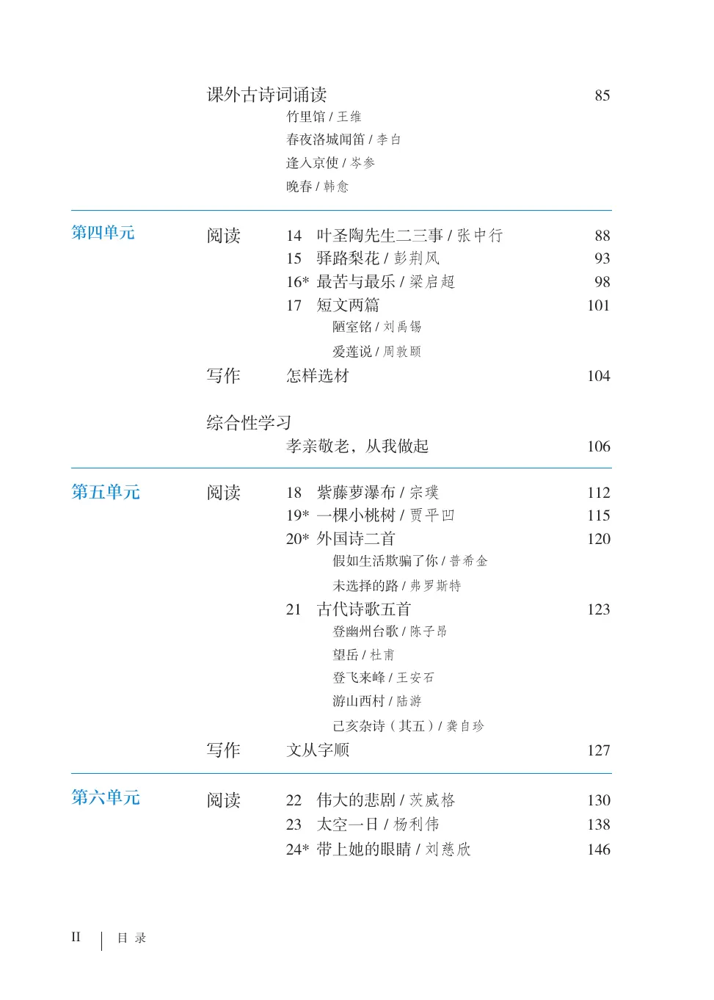
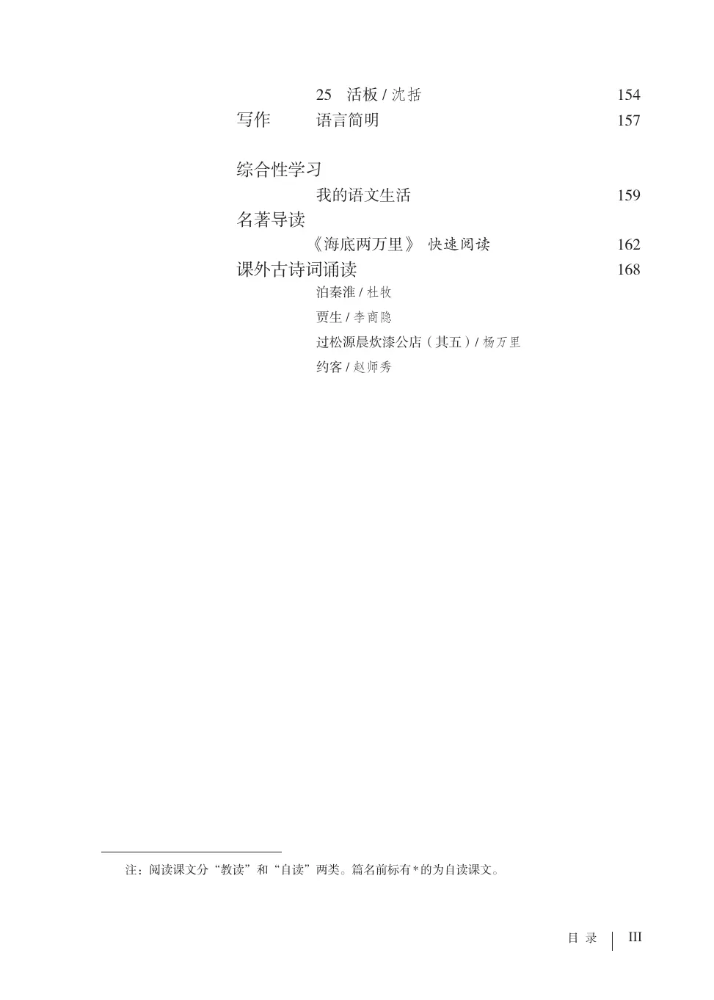
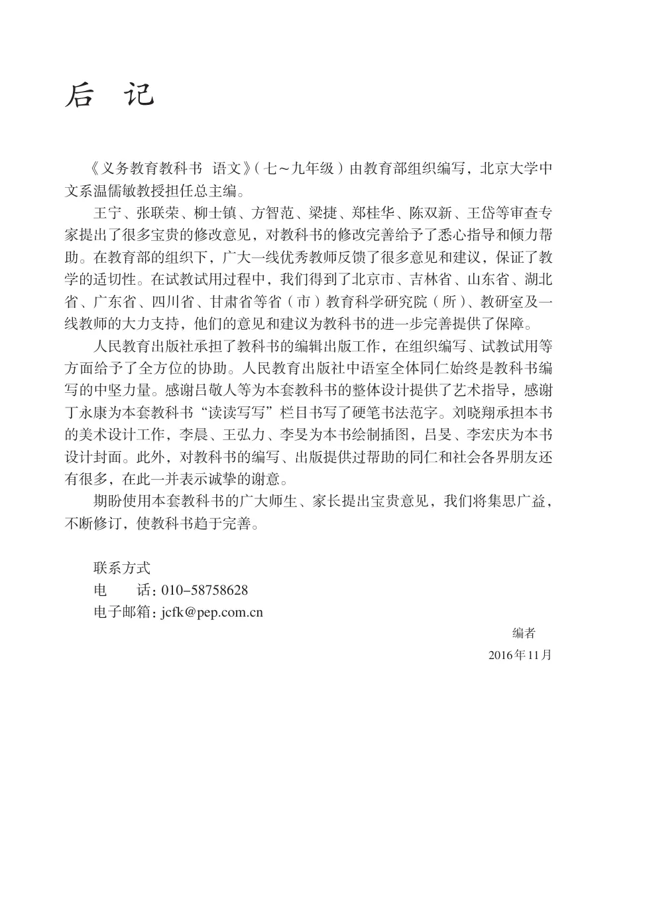
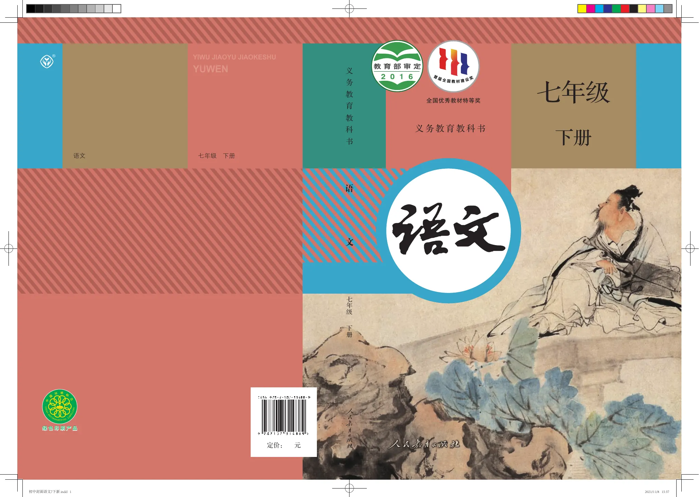

PDF 第 1 页
全国优秀教材特等奖 七年级 义务教育教科书 下册
APPENDIX
收录封面、书名页、版权页、目录、编写说明与封底；正文教学内容均归入各单元页面。
PDF 1–7
全国优秀教材特等奖 七年级 义务教育教科书 下册
义务教育教科书 七年级 下册 教育部组织编写 总主编 温儒敏 ·北 京·
总 主 编：温儒敏 初中主编：王本华（执行） 曹文轩 顾之川 张笑庸 编写人员：（以姓氏笔画为序） 王 涧 李世中 姚守梅 倪文尖 唐建新 曹 晛 韩 涵 靳 彤 责任编辑：韩 涵
美术编辑：张 蓓 惠凌峰 义务教育教科书 语文 七年级 下册 教育部组织编写 出 版 （北京市海淀区中关村南大街17号院1号楼 邮编：100081） 网 址 http://www.pep.com.cn
重 印 ×××出版社 发 行 ×××新华书店 印 刷 ×××印刷厂 版 次 2016年11月第1版 印 次 年 月第 次印刷 开 本 787毫米×1092毫米 1/16
印 张 11.00 字 数 189千字 印 数 册 书 号 ISBN 978-7-107-31488-9 定 价 元 定价批号：××号
版权所有·未经许可不得采用任何方式擅自复制或使用本产品任何部分·违者必究 如发现内容质量问题，请登录中小学教材意见反馈平台：jcyjfk.pep.com.cn 如发现印、装质量问题，影响阅读，请与×××联系调换。电话：×××-××××××××
目 录 第一单元 阅读 1 邓稼先/ 杨振宁 2
2 说和做
——记闻一多先生言行片段/ 臧克家 9 3* 回忆鲁迅先生（节选）/ 萧红 13
4 孙权劝学/《资治通鉴》 22
写作 写出人物的精神 24
第二单元 阅读 5 黄河颂/ 光未然 28
6 老山界/ 陆定一 31
7 谁是最可爱的人/ 魏巍 37
8* 土地的誓言/ 端木蕻良 43
9 木兰诗 47
写作 学习抒情 50
综合性学习
天下国家 52 第三单元 阅读 10 阿长与《山海经》/ 鲁迅 56
11 老王/ 杨绛 63
12* 台阶/ 李森祥 67
13 卖油翁/ 欧阳修 75
写作 抓住细节 77
名著导读
《骆驼祥子》 圈点与批注 79
竹里馆/ 王维 春夜洛城闻笛/ 李白 逢入京使/ 岑参 晚春/ 韩愈 第四单元 阅读 14 叶圣陶先生二三事/ 张中行 88
15 驿路梨花/ 彭荆风 93
16* 最苦与最乐/ 梁启超 98
17 短文两篇 101
陋室铭/ 刘禹锡 爱莲说/ 周敦颐
写作 怎样选材 104
综合性学习
孝亲敬老，从我做起 106 第五单元 阅读 18 紫藤萝瀑布/ 宗璞 112 19* 一棵小桃树/ 贾平凹 115 20* 外国诗二首 120 假如生活欺骗了你/ 普希金 未选择的路/ 弗罗斯特
21 古代诗歌五首 123
登幽州台歌/ 陈子昂 望岳/ 杜甫 登飞来峰/ 王安石 游山西村/ 陆游 己亥杂诗（其五）/ 龚自珍
写作 文从字顺 127
第六单元 阅读 22 伟大的悲剧/ 茨威格 130
23 太空一日/ 杨利伟 138
24* 带上她的眼睛/ 刘慈欣 146
25 活板/ 沈括 154
写作 语言简明 157
综合性学习
我的语文生活 159
名著导读
《海底两万里》 快速阅读 162 泊秦淮/ 杜牧 贾生/ 李商隐 过松源晨炊漆公店（其五）/ 杨万里 约客/ 赵师秀 注：阅读课文分“教读”和“自读”两类。篇名前标有*的为自读课文。
本页文字层未提取到可确认文字，请参照下方原书页面。






PDF 177–178
后 记 《义务教育教科书 语文》（七~九年级）由教育部组织编写，北京大学中 文系温儒敏教授担任总主编。 王宁、张联荣、柳士镇、方智范、梁捷、郑桂华、陈双新、王岱等审查专 家提出了很多宝贵的修改意见，对教科书的修改完善给予了悉心指导和倾力帮 助。在教育部的组织下，广大一线优秀教师反馈了很多意见和建议，保证了教
学的适切性。在试教试用过程中，我们得到了北京市、吉林省、山东省、湖北 省、广东省、四川省、甘肃省等省（市）教育科学研究院（所）、教研室及一 线教师的大力支持，他们的意见和建议为教科书的进一步完善提供了保障。 人民教育出版社承担了教科书的编辑出版工作，在组织编写、试教试用等 方面给予了全方位的协助。人民教育出版社中语室全体同仁始终是教科书编 写的中坚力量。感谢吕敬人等为本套教科书的整体设计提供了艺术指导，感谢
丁永康为本套教科书“读读写写”栏目书写了硬笔书法范字。刘晓翔承担本书 的美术设计工作，李晨、王弘力、李旻为本书绘制插图，吕旻、李宏庆为本书 设计封面。此外，对教科书的编写、出版提供过帮助的同仁和社会各界朋友还 有很多，在此一并表示诚挚的谢意。 期盼使用本套教科书的广大师生、家长提出宝贵意见，我们将集思广益， 不断修订，使教科书趋于完善。
联系方式 电 话：010-58758628 电子邮箱：jcfk@pep.com.cn 编者 2016年11月
® YIWU JIAOYU JIAOKESHU YUWEN 语文 七年级 下册 绿色印刷产品绿色印刷产品 定价： 元

